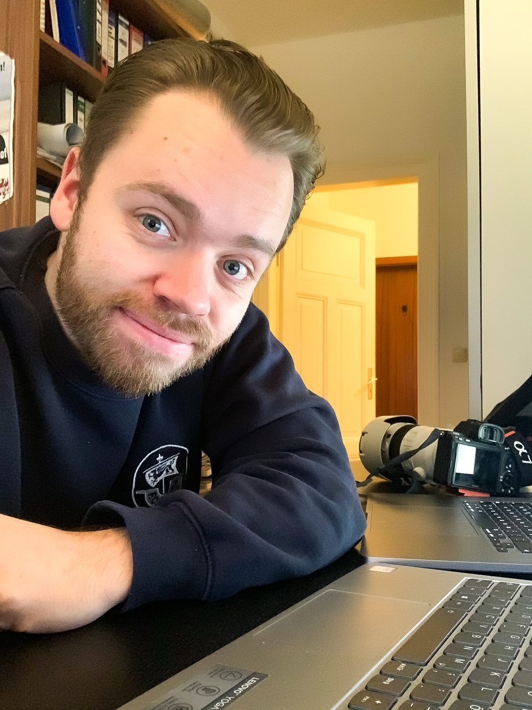

Authentische Fotografie aus Rostock.
Keine Posen. Keine Perfektion. Nur echte Momente.
Menschen · Geschichten · Begegnungen
Kurze Story zum Bild...
Kurze Story zum Bild...
Kurze Story zum Bild...
Kurze Story zum Bild...

Ich bin Paul – Fotograf aus Mecklenburg-Vorpommern, aktuell zuhause in Rostock. Aber eigentlich bin ich vor allem eines: ein Mensch der Begegnungen liebt. Der Geschichten von Menschen sammelt. Und sie sichtbar macht.
Nicht die perfekten. Nicht die inszenierten. Die echten. Die authentischen. Die ehrlichen. Nicht die, die immer nur schönes Wetter oder ein aufgesetztes Lächeln zeigen.
Vor über 10 Jahren hat mir ein guter Freund gezeigt, wie man einen Moment nicht einfach knipst – sondern wirklich einfängt. Was damals als Neugier begann, wurde zur Leidenschaft. Und diese Leidenschaft nehme ich heute ernst. Richtig ernst.
Jeder Mensch hat seine eigene Kreativität. Meine ist ein Auge für den Moment – und eine Menschenkenntnis die mir zeigt, wann dieser Moment da ist.
Kein Studio. Kein künstliches Licht. Keine Anweisungen wie: "Stell dich da hin. Lächel mal."
Wir lernen uns kennen. Telefon oder Video. Ich höre zu, was dir wichtig ist. Keine Standardfragen.
Draußen. Im echten Leben. Wir finden einen Ort, der zu dir passt. Goldene Stunde, wenn möglich.
45–60 Minuten. Erst warmwerden, dann Flow. Ich dirigiere, aber du posierst nicht. Du bist einfach da.
Du siehst alle Bilder als Preview. Wir wählen die besten aus. Farbkorrektur, leichte Retusche – keine Körperveränderung.
Digitale Galerie, 2–3 Tage später. Die Bilder gehören dir. Für immer.
Fünf Wege, deine Geschichte zu erzählen. Immer ehrlich. Immer du.
Kein Fotostudio. Keine aufgesetzte Pose. Nur du – so wie du bist. Ich lerne dich vorher kennen und gemeinsam suchen wir den Ort, der sich für dich richtig anfühlt.
Bevor ich auch nur eine einzige Aufnahme mache, will ich eure Geschichte kennen. Wie habt ihr euch kennengelernt? Was war der Moment, wo ihr wusstet – das ist es? Erst dann gehen wir raus. Und dann entstehen Bilder, die sich anfühlen wie ihr – in einem echten Moment.
Du engagierst dich. Du baust etwas auf. Du setzt dich ein – für deine Gemeinde, dein Unternehmen, deine Überzeugung. Ich begleite dich bei dem, was du tust, und mache Bilder, die zeigen, wer du bist und wofür du stehst. Kein Anzugfoto vor weißer Wand. Sondern du – mitten in deiner Welt.
Einfach mal anfangen, sich zu zeigen. 30 Minuten, ein Ort, 5 bearbeitete Bilder. Kein Aufwand, kein Stress – nur du.
Veranstaltungen, dokumentarische Begleitungen oder besondere Ideen, die in keine Schublade passen. Lass uns einfach reden.
Gemäß § 19 UStG wird keine Umsatzsteuer berechnet.
Bereit für dein Shooting? Oder erstmal Fragen? Schreib mir.
So wie du bist –
ist es richtig und gut so.